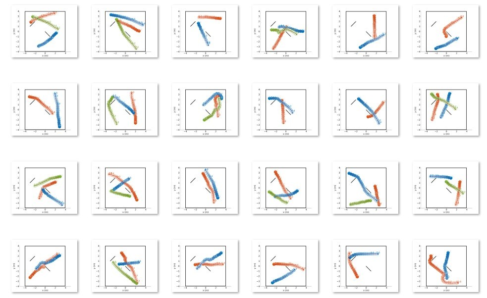
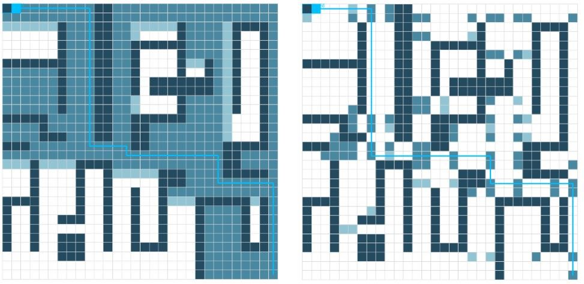
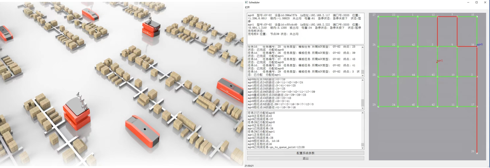

Multi-agent Cooperative Path planning and Decision-making
1. MAPF: Multi-Agent Path Finding (MAPF) is the problem of computing collision-free paths for a team of agents from their current locations to given destinations. In recent years, there has been a growing interest in MAPF. This interest is partially because real-world MAPF applications, such as warehouse management, multi-robot teams, and aircraft management, are becoming more prevalent. The performance metrics of MAPF solvers include optimality, completeness, complexity and so on. Our research focuses on the design of MAPF solvers with superior performance above. In future, we will also focus on the solution of some variants of MAPF, such as continuous time MAPF, MAPF that is not on the grid map and MAPF problems in the environment with dynamic obstacles, etc.

2. MARL + Communication: Methods based on manual designed rules are often far from optimal. Reinforcement learning can provide a better rule. Independent reinforcement learning (RL), in which each learner treats the others as part of its environment, can be employed to solve multi-agent problems. However, the strategies of other agents are uncertain and unstable during training, i.e., the environment becomes unstable from the perspective of any individual agent and thus it is hard for agents to learn to collaborate. Moreover, policies learned using independent RL can easily overfit the other agents’ policies. Thus, RL algorithms for multi-agent (MARL) are needed. MAPF is naturally modeled as a cooperative multi-agent system. Cooperative social environment facilities learning since agents learn not only by trial-and-error, but also through cooperation. Our research focuses on the MAPF based on MARL. Communication and perception [1][2] between agents can be useful in providing more effective strategies for collaboration. Thus, in our research, communication will be further introduced to help train and achieve better cooperation between agents.

3. Multi AGV Scheduling System: A multi AGV scheduling system is a system that provides functions such as scheduling, path planning, collision avoidance, task management, AGV management, and for several AGVs. It can be used in intelligent logistics, intelligent warehouse and intelligent port scenarios to carry out transportation tasks instead of manual labor. Different from MAPF, for a multi AGV scheduling system, security and stability are more important than solution quality[3]. Our research focuses on the development of secure, stable and efficient multifunctional AGV scheduling systems. It is worth mentioning that a multi AGV scheduling system "Scheduler" developed by us has been successfully applied to the multi AGV project of a robot enterprise in Beijing.

Reference
[1] X. Cheng, D. Duan, S. Gao, and L. Yang, “Integrated sensing and communications (isac) for vehicular communication networks (vcn),” IEEE Internet of Things Journal , Dec. 2022.
[2] P. Yang, D. Duan, C. Chen, X. Cheng, and L. Yang, “Multi-sensor multi-vehicle (msmv) localization and mobility tracking for autonomous driving,” IEEE transactions on vehicular technology , vol. 69, no. 12, pp.14 355-14 364, Oct. 2020.
[3] H. Zhang, R. Zhang, C. Chen, D. Duan, X. Cheng, and L. Yang, “A priority-based autonomous intersection management (aim) scheme for connected automated vehicles (cavs),” Vehicles , vol. 3, no. 3, pp. 533-544, Aug. 2021.
Copyright © Peking University | Address: No.2 Science Building, Peking University, No.5 Yiheyuan Road, Haidian District, Beijing, P.R. China